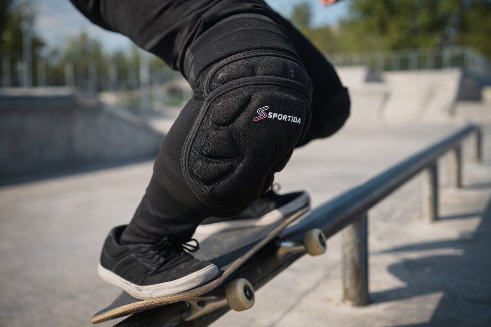

Impact Absorption for Vert and Street Skating
High-density EVA padding helps absorb heavy impact and protects your knees during falls, slides, and hard landings. These protective knee pads are built for street and park sessions.

The Sportida S6764 are among the best knee pads for skateboarding, offering reliable impact protection, flexibility, and comfort for skateboarding, BMX, and skating sessions.
View Full Product DetailsSportida S6764 knee pads combine impact protection, mobility, and long-session comfort, making them a dependable choice for action sports. If you need knee pads for skateboarding, BMX, and skating, these skateboard knee pads are designed to protect without slowing you down.
View Full Product DetailsSkateboarding exposes riders to frequent falls, slides, and direct contact with concrete surfaces. Whether practicing tricks in a skate park or skating in the street, knee protection becomes essential to prevent injuries and absorb impact during unexpected landings.
High-quality skateboard knee pads help reduce stress on the joints, improve confidence when learning new tricks, and allow riders to train longer with better protection.

High-density EVA padding helps absorb heavy impact and protects your knees during falls, slides, and hard landings. These protective knee pads are built for street and park sessions.
The best knee pads for skateboarding should combine strong impact protection, enough flexibility for tricks and jumps, breathable fabric for heat control, and a secure fit that stays in place during long sessions.
The ergonomic construction supports natural movement so you can bend, push, and land with confidence. These skateboard knee pads stay flexible without sacrificing reliable protection.

These knee pads are suitable for multiple action sports. If you want a broader friction-and-impact overview beyond skateboarding, explore our guide to knee pads for sliding sports. For sports like soccer, where diving and repeated ground contact are common, you can also explore our guide on knee pads for goalkeepers.
Knee pads are useful in skate parks, street sessions, and whenever you are learning new tricks. They help protect your knees during falls and repeated impacts.
Yes. Sportida S6764 is built as skateboard knee pads with impact-ready EVA foam and a movement-friendly ergonomic fit for skatepark and street skating.
Absolutely. The reinforced materials and design make them ideal for repeated impacts and abrasion on concrete surfaces.
Yes. The lightweight build and breathable compression fabric help reduce discomfort during extended vert and street skating rides.
Yes. Knee pads help absorb impact during falls and slides, protecting the knee joint from repeated stress and injuries. Many skateboarders use knee pads especially when learning tricks, riding ramps, or skating in concrete skate parks.
See current pricing and stock for Sportida S6764 knee pads.
See Full Product Page